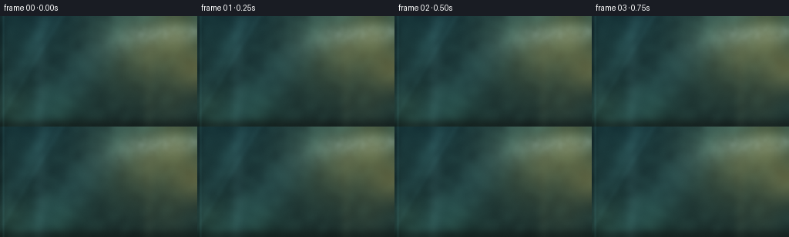
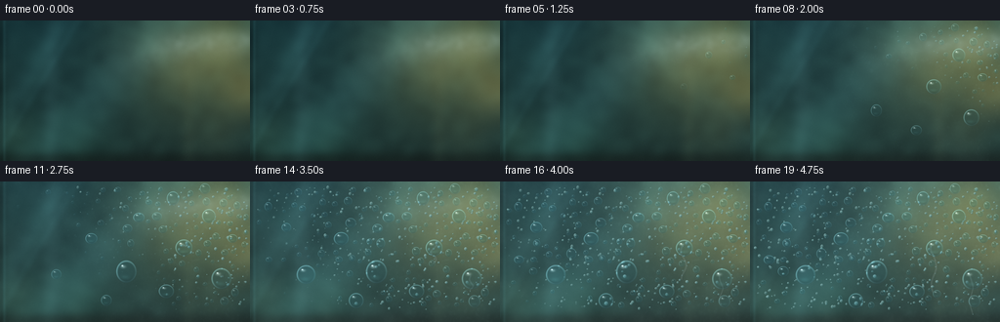

CODING AGENTS AS PIXEL WORLD MODELS
traex/DeepSeek-V4.1-Flash · phygen_111
点击播放 · 原生 RGB 像素
此结果可播放，但该运行尚未通过最终提交审核。页面展示不代表评测通过。
逐轮保存的候选
回放视频、检查图与代码变化。
每份候选均可单独播放。实际图片检查记录在下方工具轨迹中。
候选 01播放与检查图
点击播放 · 原生 RGB 像素


展开代码变化
--- 上一保存版本
+++ 本次保存版本
@@ -0,0 +1,423 @@
+from pathlib import Path
+
+import numpy as np
+from PIL import Image, ImageDraw, ImageFilter
+from scipy.ndimage import gaussian_filter, map_coordinates
+
+import artifact_io
+
+
+W, H = 256, 144
+N = 20
+FPS = 4.0
+S = 4
+RW, RH = W * S, H * S
+CASE = Path(__file__).resolve().parent
+RNG = np.random.default_rng(111_2047)
+
+
+def smoothstep(a, b, x):
+ t = np.clip((x - a) / (b - a), 0.0, 1.0)
+ return t * t * (3.0 - 2.0 * t)
+
+
+def resize_float(image, size, resample=Image.Resampling.BICUBIC):
+ if image.ndim == 2:
+ return np.asarray(Image.fromarray(image.astype(np.float32), "F").resize(size, resample))
+ return np.stack(
+ [np.asarray(Image.fromarray(image[..., c].astype(np.float32), "F").resize(size, resample))
+ for c in range(image.shape[2])],
+ axis=-1,
+ )
+
+
+def soft_circle_field(width, height, cx, cy, rx, ry=None, feather=0.12):
+ if ry is None:
+ ry = rx
+ yy, xx = np.mgrid[:height, :width]
+ d = np.sqrt(((xx - cx) / rx) ** 2 + ((yy - cy) / ry) ** 2)
+ return 1.0 - smoothstep(1.0 - feather, 1.0, d)
+
+
+def make_background():
+ """A soft, warm interior seen through cool glass."""
+ yy, xx = np.mgrid[:RH, :RW].astype(np.float32)
+ x = xx / (RW - 1)
+ y = yy / (RH - 1)
+
+ # Deep green-gray room, with amber light entering from the upper right.
+ top = np.array([26, 55, 59], np.float32) / 255.0
+ bottom = np.array([34, 54, 51], np.float32) / 255.0
+ bg = top[None, None, :] * (1.0 - y[..., None]) + bottom[None, None, :] * y[..., None]
+ warm = np.exp(-(((x - 0.80) / 0.28) ** 2 + ((y - 0.26) / 0.42) ** 2))
+ bg += warm[..., None] * np.array([0.24, 0.16, 0.045], np.float32)
+
+ # Broad reflected window bars, kept soft and mostly out of focus.
+ bar1 = np.exp(-((x - 0.205) / 0.032) ** 2) * (0.38 + 0.62 * smoothstep(0.0, 0.45, y))
+ bar2 = np.exp(-((x - 0.755) / 0.023) ** 2) * (0.30 + 0.70 * smoothstep(0.05, 0.9, y))
+ bg += 0.055 * bar1[..., None] * np.array([0.75, 0.95, 1.0], np.float32)
+ bg += 0.035 * bar2[..., None] * np.array([1.0, 0.76, 0.43], np.float32)
+
+ # Warm bokeh discs and one red plant/light accent.
+ layer = Image.new("RGBA", (RW, RH), (0, 0, 0, 0))
+ draw = ImageDraw.Draw(layer)
+ bokeh = [
+ (0.90, 0.17, 0.060, (255, 196, 92), 92),
+ (0.74, 0.35, 0.035, (255, 221, 144), 70),
+ (0.96, 0.50, 0.050, (233, 151, 49), 55),
+ (0.63, 0.12, 0.025, (210, 240, 170), 52),
+ (0.14, 0.30, 0.030, (102, 177, 150), 44),
+ (0.32, 0.78, 0.040, (91, 156, 128), 34),
+ (0.86, 0.82, 0.026, (251, 177, 84), 52),
+ (0.53, 0.58, 0.018, (144, 208, 166), 40),
+ (0.07, 0.84, 0.022, (242, 169, 79), 42),
+ (0.44, 0.08, 0.015, (214, 157, 88), 40),
+ ]
+ for cx, cy, radius, color, alpha in bokeh:
+ px, py, pr = int(cx * RW), int(cy * RH), int(radius * RW)
+ for inset, a in ((0, alpha // 3), (max(1, pr // 10), alpha)):
+ draw.ellipse((px - pr + inset, py - pr + inset, px + pr - inset, py + pr - inset),
+ fill=color + (a,))
+ layer = layer.filter(ImageFilter.GaussianBlur(16 * S))
+ bg = bg * (1.0 - 0.55 * np.asarray(layer)[..., 3:4] / 255.0)
+ bg += 0.55 * np.asarray(layer)[..., :3].astype(np.float32) / 255.0
+
+ # Unfocused leaf masses add depth without competing with the droplets.
+ leaf = Image.new("RGBA", (RW, RH), (0, 0, 0, 0))
+ ld = ImageDraw.Draw(leaf)
+ ld.ellipse((-100, 315, 255, 690), fill=(20, 89, 64, 95))
+ ld.ellipse((205, 390, 500, 680), fill=(21, 100, 67, 58))
+ ld.ellipse((820, -90, 1120, 190), fill=(44, 104, 60, 48))
+ leaf = leaf.filter(ImageFilter.GaussianBlur(30 * S))
+ la = np.asarray(leaf)[..., 3:4].astype(np.float32) / 255.0 * 0.42
+ bg = bg * (1.0 - la) + np.asarray(leaf)[..., :3].astype(np.float32) / 255.0 * la
+
+ # Fine color variation in the out-of-focus scene.
+ noise = gaussian_filter(RNG.normal(0, 1, (RH // 4, RW // 4)).astype(np.float32), 4)
+ noise = np.array(resize_float(noise, (RW, RH), Image.Resampling.BICUBIC), copy=True)
+ noise /= max(1e-5, noise.std())
+ bg += 0.012 * noise[..., None] * np.array([0.65, 1.0, 0.88], np.float32)
+ bg = np.clip(bg, 0.0, 1.0)
+
+ # Cool cast through the glass and a broad reflected sky band.
+ bg = bg * np.array([0.90, 1.01, 1.02], np.float32)
+ band = np.exp(-((x + 0.56 * y - 0.69) / 0.14) ** 2)
+ bg += band[..., None] * np.array([0.035, 0.070, 0.075], np.float32)
+
+ # Soft dark window edge at bottom and a sliver of frame on the left.
+ sill = smoothstep(0.905, 1.0, y)
+ bg = bg * (1.0 - 0.56 * sill[..., None])
+ bg += sill[..., None] * np.array([0.035, 0.045, 0.042], np.float32)
+ frame = 1.0 - smoothstep(0.010, 0.024, x)
+ bg = bg * (1.0 - 0.34 * frame[..., None])
+ bg += frame[..., None] * np.array([0.012, 0.018, 0.017], np.float32)
+
+ # Very soft overall blur sells the shallow macro depth of field.
+ bg = gaussian_filter(bg, sigma=(3.2 * S, 3.2 * S, 0))
+ return np.clip(bg, 0.0, 1.0)
+
+
+def make_condensation_fields():
+ low_h, low_w = RH // 4, RW // 4
+ fine = RNG.normal(0, 1, (low_h, low_w)).astype(np.float32)
+ fine = gaussian_filter(fine, 0.7)
+ fine = (fine - fine.min()) / (fine.max() - fine.min())
+ fine = resize_float(fine, (RW, RH), Image.Resampling.BICUBIC)
+
+ coarse = RNG.normal(0, 1, (RH // 12, RW // 12)).astype(np.float32)
+ coarse = gaussian_filter(coarse, 1.7)
+ coarse = (coarse - coarse.min()) / (coarse.max() - coarse.min())
+ coarse = resize_float(coarse, (RW, RH), Image.Resampling.BICUBIC)
+
+ # Contact starts at the upper right and rolls diagonally over the pane.
+ yy, xx = np.mgrid[:RH, :RW].astype(np.float32)
+ x, y = xx / (RW - 1), yy / (RH - 1)
+ front = 0.64 * (1.0 - x) + 0.36 * y
+ front += 0.10 * (coarse - 0.5)
+ return fine, coarse, np.clip(front, 0.0, 1.0)
+
+
+def build_droplets(front):
+ drops = []
+
+ # A few carefully placed beads create the visual rhythm.
+ heroes = [
+ (0.835, 0.245, 6.8, 0.15, 1.00),
+ (0.735, 0.470, 8.8, 0.18, 0.92),
+ (0.885, 0.690, 9.5, 0.22, 1.08),
+ (0.665, 0.780, 7.2, 0.24, 0.92),
+ (0.505, 0.640, 10.8, 0.30, 1.05),
+ (0.365, 0.405, 7.5, 0.37, 0.86),
+ (0.225, 0.660, 9.2, 0.46, 1.04),
+ (0.555, 0.255, 5.8, 0.31, 0.84),
+ (0.425, 0.845, 7.7, 0.40, 0.96),
+ (0.145, 0.325, 6.0, 0.54, 0.92),
+ (0.075, 0.555, 5.2, 0.60, 0.86),
+ (0.930, 0.405, 5.0, 0.13, 0.82),
+ ]
+ for i, (nx, ny, radius, start, aspect) in enumerate(heroes):
+ drops.append({
+ "x": nx * RW, "y": ny * RH, "r": radius * S, "start": start,
+ "aspect": aspect, "seed": 1000 + i, "hero": True, "alpha": 0.92,
+ })
+
+ # Medium beads are rejected near heroes to avoid a soup of equal circles.
+ placed = [(d["x"], d["y"], d["r"]) for d in drops]
+ attempts = 0
+ while sum(not d["hero"] for d in drops) < 125 and attempts < 4000:
+ attempts += 1
+ nx, ny = RNG.uniform(0.035, 0.985), RNG.uniform(0.05, 0.88)
+ base_r = float(np.clip(RNG.lognormal(np.log(3.2), 0.34), 1.8, 6.7))
+ px, py, pr = nx * RW, ny * RH, base_r * S
+ if any((px - qx) ** 2 + (py - qy) ** 2 < (pr + qr * 1.3) ** 2 for qx, qy, qr in placed):
+ continue
+ start = 0.12 + 0.68 * front[int(py), int(px)] + RNG.uniform(-0.055, 0.075)
+ drops.append({
+ "x": px, "y": py, "r": pr, "start": float(np.clip(start, 0.10, 0.87)),
+ "aspect": float(RNG.uniform(0.82, 1.18)), "seed": 2000 + len(drops),
+ "hero": False, "alpha": float(RNG.uniform(0.68, 0.88)),
+ })
+ placed.append((px, py, pr))
+
+ # Tiny nuclei create the granular dew texture that appears before big beads.
+ for i in range(430):
+ nx, ny = RNG.uniform(0.02, 0.99), RNG.uniform(0.04, 0.91)
+ start = 0.10 + 0.70 * front[int(ny * (RH - 1)), int(nx * (RW - 1))] + RNG.uniform(-0.05, 0.10)
+ drops.append({
+ "x": nx * RW, "y": ny * RH, "r": RNG.uniform(0.65, 1.75) * S,
+ "start": float(np.clip(start, 0.08, 0.84)), "aspect": RNG.uniform(0.78, 1.20),
+ "seed": 5000 + i, "hero": False, "alpha": float(RNG.uniform(0.42, 0.72)),
+ "micro": True,
+ })
+ return drops
+
+
+def sample_image(image, xs, ys):
+ coords = np.array([ys, xs], dtype=np.float32)
+ out = np.empty(xs.shape + (3,), dtype=np.float32)
+ for c in range(3):
+ out[..., c] = map_coordinates(image[..., c], coords, order=1, mode="reflect")
+ return out
+
+
+def draw_droplet(image, cx, cy, radius, aspect, strength, alpha, seed, hero=False, micro=False):
+ if strength <= 0.002 or radius < 0.35:
+ return
+ rx = radius * (1.0 + 0.055 * np.sin(seed * 1.7))
+ ry = radius * aspect
+ pad = max(3.0, radius * 1.22 + 2.0)
+ x0 = max(0, int(np.floor(cx - pad)))
+ x1 = min(RW, int(np.ceil(cx + pad + 1)))
+ y0 = max(0, int(np.floor(cy - pad)))
+ y1 = min(RH, int(np.ceil(cy + pad + 1)))
+ if x0 >= x1 or y0 >= y1:
+ return
+
+ yy, xx = np.mgrid[y0:y1, x0:x1].astype(np.float32)
+ nx = (xx - cx) / rx
+ ny = (yy - cy) / ry
+ q = np.sqrt(nx * nx + ny * ny)
+ feather = np.clip(1.25 / radius, 0.045, 0.30)
+ body = 1.0 - smoothstep(1.0 - feather, 1.0, q)
+ if micro:
+ body *= smoothstep(0.0, 0.18, strength)
+ body = body[..., None]
+ col = np.array([0.70, 0.88, 0.88], np.float32)
+ dark = np.array([0.16, 0.34, 0.34], np.float32)
+ shade = np.clip(0.55 + 0.38 * (-nx - ny), 0.0, 1.0)[..., None]
+ tone = dark * (1.0 - shade) + col * shade
+ a = body * alpha * smoothstep(0.15, 0.9, strength)
+ patch = image[y0:y1, x0:x1]
+ image[y0:y1, x0:x1] = patch * (1.0 - a) + tone * a
+ return
+
+ # The droplet acts as a tiny lens: the scene behind it is compressed and
+ # shifted, with a slight inversion near the rim.
+ mag = 0.72 + 0.16 * q * q
+ sx = cx + (xx - cx) * mag + rx * 0.035 * nx
+ sy = cy + (yy - cy) * mag + ry * 0.050 * ny
+ refracted = sample_image(image, sx, sy)
+ refracted = refracted * 0.91 + 0.035
+ refracted *= np.array([0.88, 1.02, 1.06], np.float32)
+
+ # Thick rim, brighter on the lit side and darker on the lower right.
+ rim = np.exp(-((q - 0.91) / 0.075) ** 2)
+ rim_light = np.clip(0.50 - 0.52 * nx - 0.58 * ny, 0.0, 1.0)
+ refracted += rim[..., None] * (0.07 + 0.22 * rim_light[..., None]) * np.array([0.68, 0.93, 0.96], np.float32)
+ lower_shadow = smoothstep(0.18, 1.0, ny) * smoothstep(0.42, 1.0, q)
+ refracted *= (1.0 - 0.16 * lower_shadow[..., None])
+
+ # Two highlights: a soft window reflection and a pin-sharp catchlight.
+ s1 = np.exp(-(((nx + 0.30) / 0.22) ** 2 + ((ny + 0.42) / 0.13) ** 2))
+ s2 = np.exp(-(((nx + 0.38) / 0.075) ** 2 + ((ny + 0.51) / 0.055) ** 2))
+ refracted += (0.30 * s1 + (0.92 if hero else 0.60) * s2)[..., None] * np.array([0.95, 1.0, 1.0], np.float32)
+
+ # A faint cyan caustic at the bottom-left keeps the bead volumetric.
+ caustic = np.exp(-(((nx + 0.12) / 0.42) ** 2 + ((ny - 0.48) / 0.18) ** 2)) * (q < 0.82)
+ refracted += 0.055 * caustic[..., None] * np.array([0.42, 0.86, 0.86], np.float32)
+
+ a = body[..., None] * alpha * smoothstep(0.02, 0.35, strength)
+ patch = image[y0:y1, x0:x1]
+ image[y0:y1, x0:x1] = patch * (1.0 - a) + np.clip(refracted, 0.0, 1.0) * a
+
+
+def draw_wet_trail(image, points, width, alpha, seed):
+ """A narrow wet path left by a bead sliding down the pane."""
+ overlay = Image.new("RGBA", (RW, RH), (0, 0, 0, 0))
+ draw = ImageDraw.Draw(overlay)
+ if len(points) > 1:
+ draw.line([(int(x), int(y)) for x, y in points], fill=(205, 235, 232, int(255 * alpha)), width=max(1, int(width)))
+ overlay = overlay.filter(ImageFilter.GaussianBlur(max(1.0, width * 0.32)))
+ arr = np.asarray(overlay).astype(np.float32) / 255.0
+ a = arr[..., 3:4] * 0.34
+ image[:] = image * (1.0 - a) + arr[..., :3] * a
+
+ # Small beads caught along the track.
+ r = np.random.default_rng(seed)
+ for i in range(1, len(points), 4):
+ px, py = points[i]
+ if r.random() < 0.72:
+ rr = max(0.75, width * r.uniform(0.20, 0.46))
+ draw_droplet(image, px + r.normal(0, width * 0.35), py, rr, 0.9,
+ 1.0, 0.45, seed + i, micro=True)
+
+
+def make_vapor(frame_t, fine, coarse):
+ yy, xx = np.mgrid[:RH, :RW].astype(np.float32)
+ x, y = xx / (RW - 1), yy / (RH - 1)
+ phase = frame_t * 0.52
+
+ # A soft plume enters upper right and bends down toward the pane.
+ center = 0.08 + 0.43 * (1.0 - x) + 0.045 * np.sin(7.0 * x + phase * 1.9)
+ width = 0.105 + 0.055 * (1.0 - x)
+ plume = np.exp(-((y - center) / width) ** 2)
+ plume *= smoothstep(0.34, 0.96, x) * smoothstep(0.00, 0.18, y)
+ plume *= 0.18 + 1.45 * gaussian_filter(fine, 1.5)
+ plume *= 0.40 + 0.82 * coarse
+ plume *= 1.0 - smoothstep(0.42, 1.0, frame_t)
+ plume = gaussian_filter(plume, 2.0 * S)
+ plume = np.clip(plume * 0.34, 0.0, 0.32)
+ return plume
+
+
+def add_condensation_haze(image, frame_t, fine, coarse, front, p):
+ # Microscopic fog appears before discrete drops; it becomes the cool veil.
+ contact = smoothstep(0.03, 0.92, p)
+ veil = 0.10 + 0.90 * smoothstep(0.00, 0.82, p)
+ texture = 0.48 + 0.52 * gaussian_filter(fine, 1.0)
+ haze = contact * veil * (0.055 + 0.10 * texture)
+ haze *= 0.60 + 0.40 * coarse
+ haze = gaussian_filter(haze, 0.9 * S)
+ fog_color = np.array([0.68, 0.80, 0.78], np.float32)
+ image[:] = image * (1.0 - haze[..., None]) + fog_color * haze[..., None]
+
+ # Fine dew sparkle across the contacted area.
+ sparkle = np.clip((fine - 0.55) / 0.45, 0.0, 1.0)
+ sparkle *= smoothstep(0.16, 0.58, p) * smoothstep(0.10, 0.90, 1.0 - front)
+ sparkle = gaussian_filter(sparkle, 0.5)
+ image[:] += sparkle[..., None] * 0.035 * np.array([0.65, 0.92, 0.92], np.float32)
+
+
+def add_glass_reflections(image, frame_t):
+ yy, xx = np.mgrid[:RH, :RW].astype(np.float32)
+ x, y = xx / (RW - 1), yy / (RH - 1)
+ shimmer = 0.96 + 0.04 * np.sin(frame_t * 5.5 + y * 8.0)
+ reflection = np.exp(-((x + 0.34 * y - 0.26) / 0.055) ** 2)
+ reflection += 0.42 * np.exp(-((x + 0.34 * y - 0.315) / 0.018) ** 2)
+ image[:] += (reflection * shimmer)[..., None] * np.array([0.030, 0.055, 0.058], np.float32)
+
+ # A cool sheen along the frame edge.
+ edge = np.exp(-((x - 0.017) / 0.006) ** 2)
+ image[:] += edge[..., None] * np.array([0.025, 0.050, 0.052], np.float32)
+
+
+def render_frame(index, bg, fine, coarse, front, drops):
+ p = index / (N - 1)
+ frame_t = p
+ image = bg.copy()
+ image *= (0.93 + 0.08 * smoothstep(0.0, 0.75, p))
+ image += 0.006 * smoothstep(0.3, 0.9, p)
+
+ add_glass_reflections(image, frame_t)
+
+ # The leading contact front becomes a barely visible wet boundary.
+ lead = np.clip(1.0 - np.abs(front - (0.10 + 0.82 * p)) / 0.065, 0.0, 1.0)
+ lead *= smoothstep(0.03, 0.22, p) * (1.0 - smoothstep(0.72, 1.0, p))
+ image += (gaussian_filter(lead, 2.4 * S) * 0.025)[..., None] * np.array([0.55, 0.86, 0.88], np.float32)
+
+ add_condensation_haze(image, frame_t, fine, coarse, front, p)
+
+ # A pair of rivulets begins late, after enough water has accumulated.
+ if p > 0.54:
+ run_t = smoothstep(0.54, 1.0, p)
+ for trail_index, (sx, sy, amp, speed, phase, width) in enumerate([
+ (0.735, 0.455, 0.010, 0.34, 0.4, 2.1),
+ (0.885, 0.675, 0.006, 0.27, 1.6, 1.6),
+ ]):
+ y_end = sy + speed * run_t
+ n = 30
+ tt = np.linspace(0.0, 1.0, n)
+ pts = []
+ for q in tt:
+ yy = (sy + (y_end - sy) * q) * RH
+ xx = (sx + amp * np.sin(q * 8.0 + phase + run_t * 4.0)) * RW
+ pts.append((xx, yy))
+ draw_wet_trail(image, pts, width * S, 0.52, 700 + trail_index)
+
+ # Draw tiny nuclei first, then medium beads, then hero beads.
+ ordered = sorted(drops, key=lambda d: (d["r"], d["seed"]))
+ for d in ordered:
+ age = p - d["start"]
+ if age <= 0:
+ continue
+ duration = 0.28 if d.get("micro") else 0.33 if d["hero"] else 0.25
+ growth = smoothstep(0.0, duration, age)
+ if growth <= 0:
+ continue
+ # Small nuclei linger as tiny points, then swell and coalesce late.
+ final_scale = 1.0 if d.get("micro") else (1.08 if d["hero"] else 0.94)
+ radius = d["r"] * (0.18 + 0.82 * growth ** 0.72) * final_scale
+ strength = growth
+ alpha = d["alpha"] * (0.72 + 0.28 * growth)
+ cy = d["y"]
+ cx = d["x"]
+
+ # Slight settling of larger beads over time, without making all of them run.
+ if d["hero"] and p > 0.55:
+ settle = smoothstep(0.55, 1.0, p)
+ cx += radius * 0.10 * np.sin(d["seed"] * 0.71) * settle
+ cy += radius * 0.055 * settle
+
+ draw_droplet(image, cx, cy, radius, d["aspect"], strength, alpha,
+ d["seed"], hero=d["hero"], micro=d.get("micro", False))
+
+ vapor = make_vapor(frame_t, fine, coarse)
+ vapor_color = np.array([0.78, 0.91, 0.89], np.float32)
+ image[:] = image * (1.0 - vapor[..., None]) + vapor_color * vapor[..., None]
+
+ # Gentle highlight bloom, then downscale for the final pixel-art scale.
+ bright = np.clip(image - 0.70, 0.0, 1.0)
+ bloom = gaussian_filter(bright, sigma=(2.1 * S, 2.1 * S, 0))
+ image = np.clip(image + 0.12 * bloom, 0.0, 1.0)
+
+ # Subtle 35mm-style film grain, strongest in the shadows.
+ grain = RNG.normal(0, 0.0065, (RH, RW, 1)).astype(np.float32)
+ image = np.clip(image + grain * (1.0 - 0.4 * image), 0.0, 1.0)
+
+ small = resize_float(image, (W, H), Image.Resampling.LANCZOS)
+ small = np.clip(small, 0.0, 1.0)
+ return (small * 255.0 + 0.5).astype(np.uint8)
+
+
+def main():
+ bg = make_background()
+ fine, coarse, front = make_condensation_fields()
+ drops = build_droplets(front)
+ frames = [render_frame(i, bg, fine, coarse, front, drops) for i in range(N)]
+ frames = np.stack(frames, axis=0)
+ artifact_io.save(frames, CASE)
+ print(f"Saved {frames.shape} video to {CASE}")
+
+
+if __name__ == "__main__":
+ main()
候选 02播放与检查图
点击播放 · 原生 RGB 像素

展开代码变化
--- 上一保存版本
+++ 本次保存版本
@@ -46,17 +46,17 @@
y = yy / (RH - 1)
# Deep green-gray room, with amber light entering from the upper right.
- top = np.array([26, 55, 59], np.float32) / 255.0
- bottom = np.array([34, 54, 51], np.float32) / 255.0
+ top = np.array([42, 66, 68], np.float32) / 255.0
+ bottom = np.array([54, 67, 58], np.float32) / 255.0
bg = top[None, None, :] * (1.0 - y[..., None]) + bottom[None, None, :] * y[..., None]
- warm = np.exp(-(((x - 0.80) / 0.28) ** 2 + ((y - 0.26) / 0.42) ** 2))
- bg += warm[..., None] * np.array([0.24, 0.16, 0.045], np.float32)
+ warm = np.exp(-(((x - 0.80) / 0.29) ** 2 + ((y - 0.26) / 0.43) ** 2))
+ bg += warm[..., None] * np.array([0.34, 0.21, 0.055], np.float32)
# Broad reflected window bars, kept soft and mostly out of focus.
bar1 = np.exp(-((x - 0.205) / 0.032) ** 2) * (0.38 + 0.62 * smoothstep(0.0, 0.45, y))
bar2 = np.exp(-((x - 0.755) / 0.023) ** 2) * (0.30 + 0.70 * smoothstep(0.05, 0.9, y))
- bg += 0.055 * bar1[..., None] * np.array([0.75, 0.95, 1.0], np.float32)
- bg += 0.035 * bar2[..., None] * np.array([1.0, 0.76, 0.43], np.float32)
+ bg += 0.075 * bar1[..., None] * np.array([0.75, 0.95, 1.0], np.float32)
+ bg += 0.052 * bar2[..., None] * np.array([1.0, 0.76, 0.43], np.float32)
# Warm bokeh discs and one red plant/light accent.
layer = Image.new("RGBA", (RW, RH), (0, 0, 0, 0))
@@ -75,19 +75,19 @@
]
for cx, cy, radius, color, alpha in bokeh:
px, py, pr = int(cx * RW), int(cy * RH), int(radius * RW)
- for inset, a in ((0, alpha // 3), (max(1, pr // 10), alpha)):
+ for inset, a in ((0, alpha // 2), (max(1, pr // 10), alpha)):
draw.ellipse((px - pr + inset, py - pr + inset, px + pr - inset, py + pr - inset),
fill=color + (a,))
layer = layer.filter(ImageFilter.GaussianBlur(16 * S))
- bg = bg * (1.0 - 0.55 * np.asarray(layer)[..., 3:4] / 255.0)
- bg += 0.55 * np.asarray(layer)[..., :3].astype(np.float32) / 255.0
+ bg = bg * (1.0 - 0.62 * np.asarray(layer)[..., 3:4] / 255.0)
+ bg += 0.62 * np.asarray(layer)[..., :3].astype(np.float32) / 255.0
# Unfocused leaf masses add depth without competing with the droplets.
leaf = Image.new("RGBA", (RW, RH), (0, 0, 0, 0))
ld = ImageDraw.Draw(leaf)
- ld.ellipse((-100, 315, 255, 690), fill=(20, 89, 64, 95))
- ld.ellipse((205, 390, 500, 680), fill=(21, 100, 67, 58))
- ld.ellipse((820, -90, 1120, 190), fill=(44, 104, 60, 48))
+ ld.ellipse((-100, 315, 255, 690), fill=(23, 92, 66, 85))
+ ld.ellipse((205, 390, 500, 680), fill=(24, 103, 69, 48))
+ ld.ellipse((820, -90, 1120, 190), fill=(51, 110, 64, 42))
leaf = leaf.filter(ImageFilter.GaussianBlur(30 * S))
la = np.asarray(leaf)[..., 3:4].astype(np.float32) / 255.0 * 0.42
bg = bg * (1.0 - la) + np.asarray(leaf)[..., :3].astype(np.float32) / 255.0 * la
@@ -96,18 +96,18 @@
noise = gaussian_filter(RNG.normal(0, 1, (RH // 4, RW // 4)).astype(np.float32), 4)
noise = np.array(resize_float(noise, (RW, RH), Image.Resampling.BICUBIC), copy=True)
noise /= max(1e-5, noise.std())
- bg += 0.012 * noise[..., None] * np.array([0.65, 1.0, 0.88], np.float32)
+ bg += 0.016 * noise[..., None] * np.array([0.65, 1.0, 0.88], np.float32)
bg = np.clip(bg, 0.0, 1.0)
# Cool cast through the glass and a broad reflected sky band.
- bg = bg * np.array([0.90, 1.01, 1.02], np.float32)
+ bg = bg * np.array([0.91, 1.01, 1.02], np.float32)
band = np.exp(-((x + 0.56 * y - 0.69) / 0.14) ** 2)
- bg += band[..., None] * np.array([0.035, 0.070, 0.075], np.float32)
+ bg += band[..., None] * np.array([0.050, 0.086, 0.092], np.float32)
# Soft dark window edge at bottom and a sliver of frame on the left.
sill = smoothstep(0.905, 1.0, y)
- bg = bg * (1.0 - 0.56 * sill[..., None])
- bg += sill[..., None] * np.array([0.035, 0.045, 0.042], np.float32)
+ bg = bg * (1.0 - 0.50 * sill[..., None])
+ bg += sill[..., None] * np.array([0.040, 0.052, 0.048], np.float32)
frame = 1.0 - smoothstep(0.010, 0.024, x)
bg = bg * (1.0 - 0.34 * frame[..., None])
bg += frame[..., None] * np.array([0.012, 0.018, 0.017], np.float32)
@@ -167,11 +167,11 @@
while sum(not d["hero"] for d in drops) < 125 and attempts < 4000:
attempts += 1
nx, ny = RNG.uniform(0.035, 0.985), RNG.uniform(0.05, 0.88)
- base_r = float(np.clip(RNG.lognormal(np.log(3.2), 0.34), 1.8, 6.7))
+ base_r = float(np.clip(RNG.lognormal(np.log(3.6), 0.34), 1.8, 7.2))
px, py, pr = nx * RW, ny * RH, base_r * S
if any((px - qx) ** 2 + (py - qy) ** 2 < (pr + qr * 1.3) ** 2 for qx, qy, qr in placed):
continue
- start = 0.12 + 0.68 * front[int(py), int(px)] + RNG.uniform(-0.055, 0.075)
+ start = 0.12 + 0.68 * front[int(py), int(px)] + RNG.uniform(-0.065, 0.085)
drops.append({
"x": px, "y": py, "r": pr, "start": float(np.clip(start, 0.10, 0.87)),
"aspect": float(RNG.uniform(0.82, 1.18)), "seed": 2000 + len(drops),
@@ -180,11 +180,11 @@
placed.append((px, py, pr))
# Tiny nuclei create the granular dew texture that appears before big beads.
- for i in range(430):
+ for i in range(360):
nx, ny = RNG.uniform(0.02, 0.99), RNG.uniform(0.04, 0.91)
start = 0.10 + 0.70 * front[int(ny * (RH - 1)), int(nx * (RW - 1))] + RNG.uniform(-0.05, 0.10)
drops.append({
- "x": nx * RW, "y": ny * RH, "r": RNG.uniform(0.65, 1.75) * S,
+ "x": nx * RW, "y": ny * RH, "r": RNG.uniform(0.72, 1.90) * S,
"start": float(np.clip(start, 0.08, 0.84)), "aspect": RNG.uniform(0.78, 1.20),
"seed": 5000 + i, "hero": False, "alpha": float(RNG.uniform(0.42, 0.72)),
"micro": True,
@@ -285,37 +285,37 @@
def make_vapor(frame_t, fine, coarse):
yy, xx = np.mgrid[:RH, :RW].astype(np.float32)
x, y = xx / (RW - 1), yy / (RH - 1)
- phase = frame_t * 0.52
+ phase = frame_t * 0.62
# A soft plume enters upper right and bends down toward the pane.
- center = 0.08 + 0.43 * (1.0 - x) + 0.045 * np.sin(7.0 * x + phase * 1.9)
- width = 0.105 + 0.055 * (1.0 - x)
+ center = 0.055 + 0.35 * (1.0 - x) + 0.040 * np.sin(5.2 * x + phase * 1.7)
+ width = 0.095 + 0.085 * (1.0 - x)
plume = np.exp(-((y - center) / width) ** 2)
- plume *= smoothstep(0.34, 0.96, x) * smoothstep(0.00, 0.18, y)
- plume *= 0.18 + 1.45 * gaussian_filter(fine, 1.5)
- plume *= 0.40 + 0.82 * coarse
- plume *= 1.0 - smoothstep(0.42, 1.0, frame_t)
- plume = gaussian_filter(plume, 2.0 * S)
- plume = np.clip(plume * 0.34, 0.0, 0.32)
+ plume *= smoothstep(0.28, 0.92, x) * smoothstep(0.00, 0.15, y)
+ plume *= 0.12 + 1.22 * gaussian_filter(fine, 2.5)
+ plume *= 0.30 + 0.90 * coarse
+ plume *= 1.0 - smoothstep(0.34, 0.90, frame_t)
+ plume = gaussian_filter(plume, 3.2 * S)
+ plume = np.clip(plume * 0.39, 0.0, 0.25)
return plume
def add_condensation_haze(image, frame_t, fine, coarse, front, p):
# Microscopic fog appears before discrete drops; it becomes the cool veil.
- contact = smoothstep(0.03, 0.92, p)
- veil = 0.10 + 0.90 * smoothstep(0.00, 0.82, p)
+ contact = smoothstep(0.02, 0.94, p)
+ veil = 0.08 + 0.92 * smoothstep(0.00, 0.86, p)
texture = 0.48 + 0.52 * gaussian_filter(fine, 1.0)
- haze = contact * veil * (0.055 + 0.10 * texture)
- haze *= 0.60 + 0.40 * coarse
- haze = gaussian_filter(haze, 0.9 * S)
- fog_color = np.array([0.68, 0.80, 0.78], np.float32)
+ haze = contact * veil * (0.040 + 0.075 * texture)
+ haze *= 0.66 + 0.34 * coarse
+ haze = gaussian_filter(haze, 1.2 * S)
+ fog_color = np.array([0.62, 0.75, 0.73], np.float32)
image[:] = image * (1.0 - haze[..., None]) + fog_color * haze[..., None]
# Fine dew sparkle across the contacted area.
sparkle = np.clip((fine - 0.55) / 0.45, 0.0, 1.0)
sparkle *= smoothstep(0.16, 0.58, p) * smoothstep(0.10, 0.90, 1.0 - front)
- sparkle = gaussian_filter(sparkle, 0.5)
- image[:] += sparkle[..., None] * 0.035 * np.array([0.65, 0.92, 0.92], np.float32)
+ sparkle = gaussian_filter(sparkle, 0.7)
+ image[:] += sparkle[..., None] * 0.026 * np.array([0.65, 0.92, 0.92], np.float32)
def add_glass_reflections(image, frame_t):
@@ -378,7 +378,7 @@
final_scale = 1.0 if d.get("micro") else (1.08 if d["hero"] else 0.94)
radius = d["r"] * (0.18 + 0.82 * growth ** 0.72) * final_scale
strength = growth
- alpha = d["alpha"] * (0.72 + 0.28 * growth)
+ alpha = d["alpha"] * (0.82 + 0.18 * growth)
cy = d["y"]
cx = d["x"]
@@ -398,7 +398,7 @@
# Gentle highlight bloom, then downscale for the final pixel-art scale.
bright = np.clip(image - 0.70, 0.0, 1.0)
bloom = gaussian_filter(bright, sigma=(2.1 * S, 2.1 * S, 0))
- image = np.clip(image + 0.12 * bloom, 0.0, 1.0)
+ image = np.clip(image + 0.10 * bloom, 0.0, 1.0)
# Subtle 35mm-style film grain, strongest in the shadows.
grain = RNG.normal(0, 0.0065, (RH, RW, 1)).astype(np.float32)
候选 03播放与检查图
可观测工具轨迹
实际执行的命令与返回图片。
命令 1exit 0
/bin/bash -c "pwd && rg --files -g '"'!**/.git/**'"' | sed -n '1,160p'"
命令 2exit 0
/bin/bash -c 'cat prompt.txt'
命令 3exit 0
/bin/bash -c 'cat GENERATION_RULES.md'
命令 4exit 0
/bin/bash -c 'cat task_spec.json'
命令 5exit 0
/bin/bash -c "find . -maxdepth 2 -type f -printf '%p %s bytes\\n' | sort | sed -n '1,200p'"
命令 6exit 0
/bin/bash -c "sed -n '1,240p' artifact_io.py"
命令 7exit 0
/bin/bash -c "sed -n '1,240p' player_template.html"
命令 8exit 0
/bin/bash -c "python - <<'PY'
import numpy, PIL
print('numpy', numpy.__version__, 'PIL', PIL.__version__)
try:
import scipy; print('scipy', scipy.__version__)
except Exception as e: print('no scipy', e)
try:
import cv2; print('cv2', cv2.__version__)
except Exception as e: print('no cv2', e)
PY"命令 9exit 1
/bin/bash -c 'time python generate.py'
命令 10exit 0
/bin/bash -c 'time python generate.py'
命令 11exit 0
/bin/bash -c "python - <<'PY'
import generate, numpy as np
bg=generate.make_background()
print('bg', bg.shape, bg.min(axis=(0,1)), bg.max(axis=(0,1)), bg.mean(axis=(0,1)))
f=np.array(__import__('PIL').Image.open('frames/00.png'))
print('frame00', f.min(axis=(0,1)), f.max(axis=(0,1)), f.mean(axis=(0,1)))
print('center', f[72,128], 'topleft', f[10,10], 'topright', f[10,245])
PY"命令 12exit 0
/bin/bash -c "python - <<'PY'
import generate, numpy as np
from PIL import Image
bg=generate.make_background()
Image.fromarray((bg*255).astype('uint8')).resize((256,144), Image.Resampling.LANCZOS).save('bg_check.png')
fine,coarse,front=generate.make_condensation_fields(); drops=generate.build_droplets(front)
print('drops', len(drops), 'heroes', sum(d['hero'] for d in drops), 'front', front.min(),front.max(),front.mean())
for i in [0,5,10,15,19]:
f=generate.render_frame(i,bg,fine,coarse,front,drops)
Image.fromarray(f).save(f'candidate_{i:02d}.png')
print(i, f.mean(axis=(0,1)))
PY"命令 13exit 0
/bin/bash -c 'mkdir -p candidates/v1 && cp task_spec.json prompt.txt candidates/v1/ && cp -a frames index.html inspection.png transition_check.png pixels.npz candidates/v1/'
命令 14exit 0
/bin/bash -c 'time python generate.py'
命令 15exit 0
/bin/bash -c 'mkdir -p candidates/v2 && cp task_spec.json prompt.txt candidates/v2/ && cp -a frames index.html inspection.png transition_check.png pixels.npz candidates/v2/'
视觉工具实际返回图片 1

视觉工具实际返回图片 2
视觉工具实际返回图片 3
视觉工具实际返回图片 4
视觉工具实际返回图片 5
视觉工具实际返回图片 6
视觉工具实际返回图片 7
视觉工具实际返回图片 8

视觉工具实际返回图片 9
视觉工具实际返回图片 10
保存候选 3 份；完成命令 15 次；可验证图片返回 10 张。原始 API 响应与完整日志保留在本地。